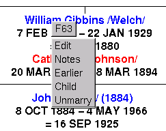
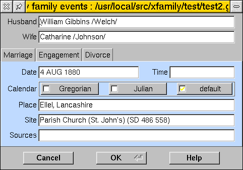

Right-clicking over a marriage in the main window pops up a menu:

Choose "Edit" to get a dialogue which displays date and place of marriage.

You can see, enter, or change the date, time and place of the marriage (but not the names of the people involved). Clicking on the engagement tab gives a similar dialogue with a date and time (the latter perhaps not very meaningful) for the engagement.
For those marriages which ended in a divorce, the final tab lets you edit the date and time of this. A place is not meaningful in most cases, unless you consider that this is the court which issued the final decree. However, that would usually be defined by the supporting documentation.
As for the edit person dbox, you can specify the calendar under which the date was recorded. GEDCOM defines the default as meaning the Gregorian calendar, and no special flag is attached to the date in the database. This is what you get by choosing the "default" radio button. Choosing "Gregorian" explicitly marks the date as being the gregorian calendar, which may be useful for dates (previous to 1752 in the English-speaking world) where the reader might assume a date was Julian. "Julian" should be chosen for all those dates which were recorded in the Julian calendar. GEDCOM allows for three other calendars to be specified - Hebrew, Roman and French Revolutionary - and in time X!Family will be adding code to deal with these too.
Clicking "Cancel" closes the dialogue without saving any changes made. Typically you would do this if you had opened the dialogue just to read the details. Clicking "OK" saves the current details back into the database (as at version 0.11, this is not implemented - editing functionality will be along shortly). Clicking "Help" brings up this screenbook page in your current help system.
Choosing "Notes" in the pop-up menu opens a basic text-editor window showing a set of notes associated with this marriage. You can edit these notes (the usual set of cut-and-paste keys work, meaning you can export text to other windows, or import to this one). On the menu bar of this editor window are five buttons. "Cancel" closes the window without saving any changes you made to the text. "Clear" removes all the text (but doesn't change your GEDCOM until you save the changes). "Restore" throws away any changes you have made and gets the original notes back from your GEDCOM. "Save to GEDCOM" commits the changes you have made back to the GEDCOM in memory (but not to disc until you choose File->Save from the main menu). "OK (Save and close)" saves the changes, and closes the window. As of 2000-11-13 saving the notes back to the GEDCOM actually works - this is the first stage of full editing functionality added to the program !
Next | Prev | Table of Contents